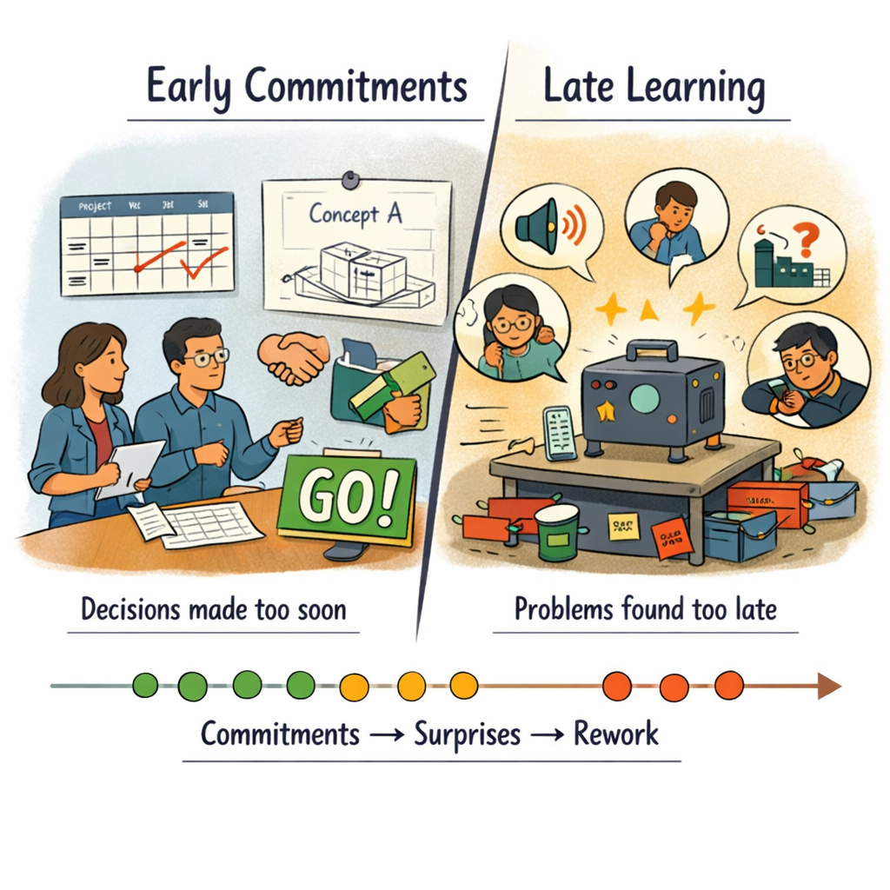

Section 18.1
The Familiar Pattern: Late Learning, Early Commitments
When teams rush through the early development phase, they carry hidden assumptions into detailed design and industrialization. Those assumptions show up later as surprises, rework, and firefighting.
If you recognise this pattern, you are not alone:
- Architecture is sketched quickly so schedules can be set and suppliers engaged.
- One main concept is chosen early, with only rough analysis behind it.
- Testing and experiments cluster near prototype and pilot phases, when changes are already expensive.
- Issues like noise, fatigue, ergonomics, or supplier capability show up late, forcing design loopbacks and workarounds.

On paper, everything looks green until it doesn’t. In reality, the team is committing to decisions long before it has the knowledge to be confident — and once tooling and suppliers are locked in, changing direction feels almost impossible.
This is not a character flaw in teams. It is a system pattern: pressure for speed, lack of shared mental models for learning, and governance that asks for dates and scope, not knowledge and risk.
Section 18.2
A Different Pattern: Learn Early, Decide at the Last Responsible Moment
Lean Learning Cycles flip the pattern:

“The goal is not to slow things down with more process. The goal is to move uncertainty and learning forward in time, when changes are cheap and options are still open.”
Decisions are timed for the last responsible moment — not as late as possible, but as late as necessary to have solid knowledge without causing delay. The learning cycles make that moment visible: when enough knowledge has been gathered to narrow the set and commit with confidence.
Section 18.3
For Coaches and Teams: A Shared Engine for Early Development
For coaches
Lean Learning Cycles offer a simple engine to anchor conversations about early development:
- A shared language for talking about knowledge gaps, key decisions, and experiments.
- A cadence — for example, 2-week cycles with integration events — that you can bring into existing projects without redesigning the whole system.
- A way to connect set-based design, concurrent engineering, and visual knowledge into one coherent practice, not just separate tools.
For teams
Lean Learning Cycles offer a way to turn vague pressure into concrete work:
- Instead of “make progress on the concept,” the team works to close specific knowledge gaps.
- Instead of endless analysis, they design experiments with clear hypotheses and success criteria.
- Instead of slide decks that disappear, they leave behind Knowledge Briefs, trade-off curves, and learning boards that future projects can reuse.
You do not need a perfect pilot project to start. Most coaches and teams already carry one or two products in their heads where late surprises hurt. Lean Learning Cycles give you a structure to use those experiences as a starting point for doing the next one differently.